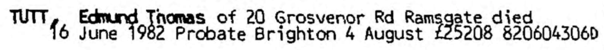

Edmund Thomas Tutt 1914 - 1982
[ Home ] | [ Calendar ] | [ Surnames Index ] | [ Errors ] | [ Family History ]An agricultural labourer and the 3rd of 7 children of Edmund Tutt (a bricklayer's labourer) and Rose Butler (a laundress), Edmund Tutt, the second cousin once-removed on the father's side of Nigel Horne, was born in St Lawrence, Thanet, Kent, England on 20 Dec 19141,2,3,4. He married Phyllis K G Goldsmith in Thanet, Kent, England around Aug 19556.
During his life, he was living at 20 Grosvenor Road, St Lawrence in Thanet on 19 Jun 19211 - less than a mile from his aunt Jane Eliza Caroline who was living at 3 Central Road, Ramsgate, Kent and his cousin on his father's side Charles Fuller who was living at 3 Central Road, Ramsgate, Kent -, on 29 Sept 19392 (the same place as his mother had been living on 19 Jun 1921), in 19637, in 19748 and in 1982.
He died on 16 Jun 1982 in Thanet4,5.
Parents
- Edmund Thomas was born on 9 Jun 1882
- Rose was born on 29 Feb 1884
Citations
- 1921 Census Of England & Wales - Findmypast (was age 6 and the son of the head of the household)
- 1939 Register - Findmypast (was the son of the head of the household)
- England & Wales births 1837-2006 - Findmypast
- England & Wales deaths 1837-2007 - Findmypast
- England & Wales Government Probate Death Index 1858-2019 - Findmypast
- England & Wales Marriages 1837-2005 - Findmypast
- 1963 Kelly's Thanet Directory
- 1974 Kelly's Thanet Directory
Media
Edmund Thomas Tutt - probate

1963 Kelly's Thanet Directory

1974 Kelly's Thanet Directory

England & Wales deaths 1837-2007 - BMD/D/1982/2/AZ/000921/012
England & Wales marriages 1837-2005 - BMD/M/1955/3/AZ/001626/073
England & Wales births 1837-2006 - BMD/B/1915/1/AZ/001570/049
England & Wales Government Probate Death Index 1858-2019 - GBOR/GOVPROBATE/C/1982-1982/00242531
1921 Census of England & Wales - GBC/1921/RG15/04480/0163/05
Family Tree

Map
Generated by ged2site. Last updated on Jul 3, 2024
Known Issues
Residence record for 1982 contains no citation